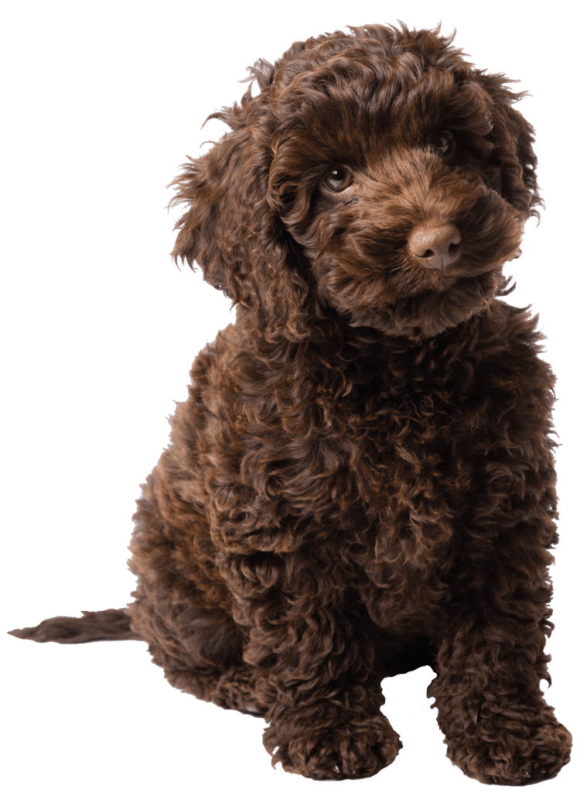

Welcome to Labradoodles 101
The Labradoodle

It’s not surprising that the Labradoodle has gained such popularity so quickly. Originally developed to be hypoallergenic guide dogs, the first planned crosses of Poodles and Labrador Retrievers were arranged by the Royal Guide Dogs Association of Australia. The result was a smart and sociable dog who not only possessed a nature appropriate for guide dogs but also had a low-shedding coat. While the hybrid is not yet achieving consistent results in coat or temperament, she is a wildly popular and affectionate dog.
Physical Caracteristics
Much like the Poodle, there are three main sizes for the Labradoodle: standard, medium and miniature. Due to its hybrid nature, however, the physical characteristics of a Labradoodle may vary. For instance, a Labradoodle will have different coat types, from wiry, wooly, wavy, curly, or fleece-like. The color of the coat also varies, including cream, gold, red, black, chocolate, brindle and multi-patterned. Contrary to belief, some Labradoodles do shed, though far less and with less odor than a Labrador Retriever. Though there is no completely hypoallergenic dog, Labradoodles may be a good fit for those with allergies.
Personailty
The Labradoodle typically acquires the friendliness and well-tempered nature of their parent breeds. Likewise, they are considered very intelligent and highly trainable. Like Labs, they are amazing family dogs and are both good with children and loyal. Like Poodles, they are very smart and can be protective of their people. They're fun-loving, affectionate, athletic, graceful and highly active dogs. They generally make good watchdogs and therapy dogs and get along well with other animals. Unsurprisingly, considering their mix, Labradoodles love the water and can be exceptional swimmers. They can be cautious or shy with strangers and may also be prone to restlessness or loneliness if left along for too long.